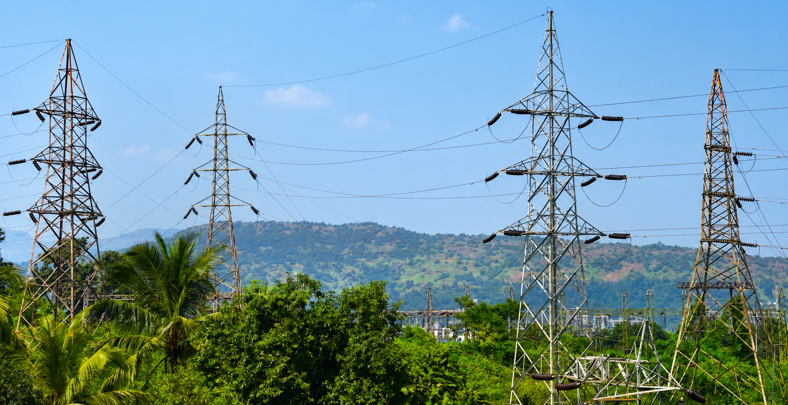
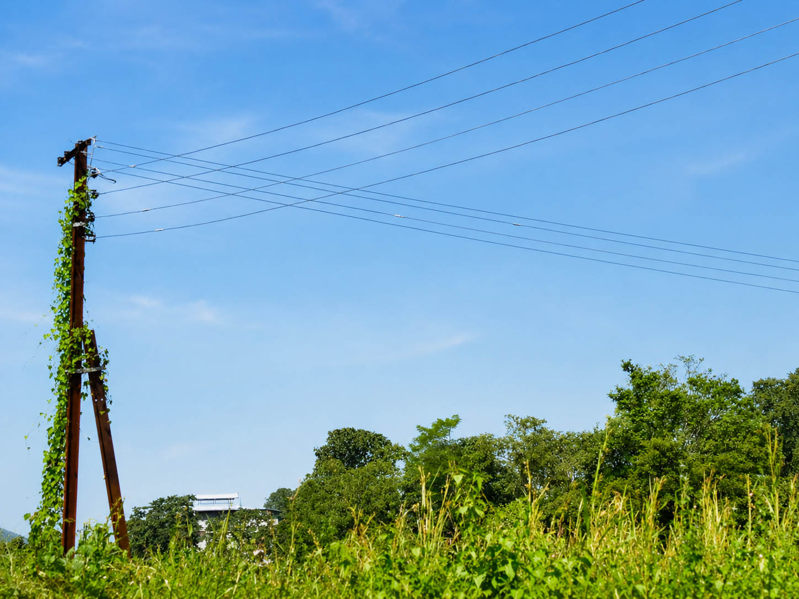
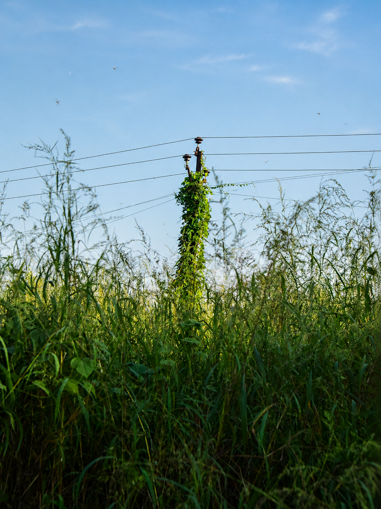
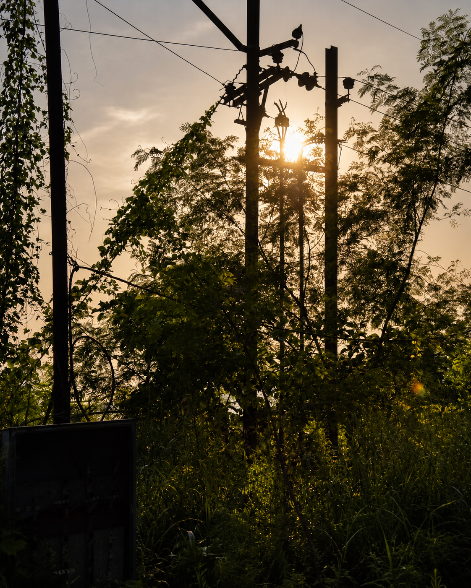
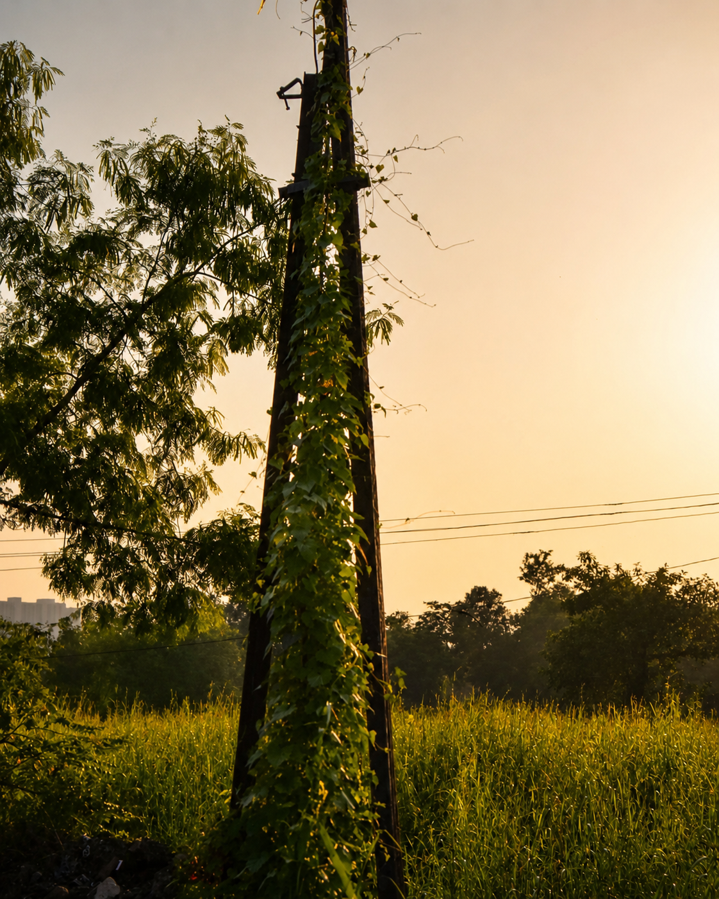
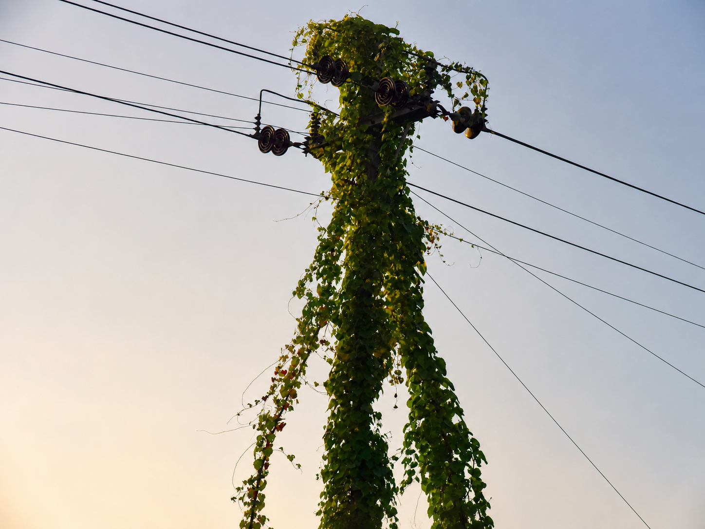

Where the Wires Grow · Vol. I
Green Bleeds Dreams
A photography series on the wires strung between our settlements — and the natural world that meets them, climbing some and holding others against the sky.






